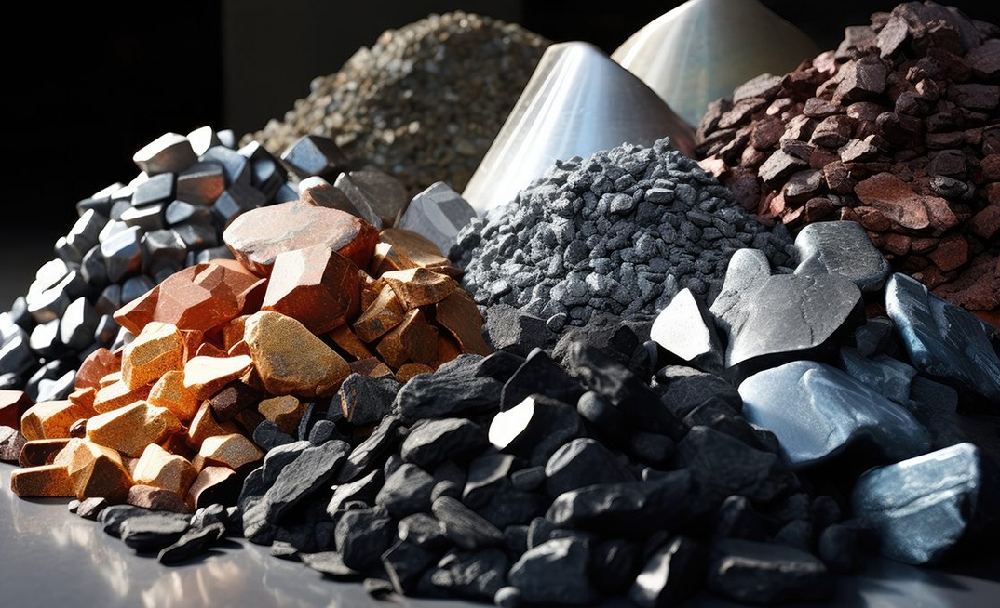
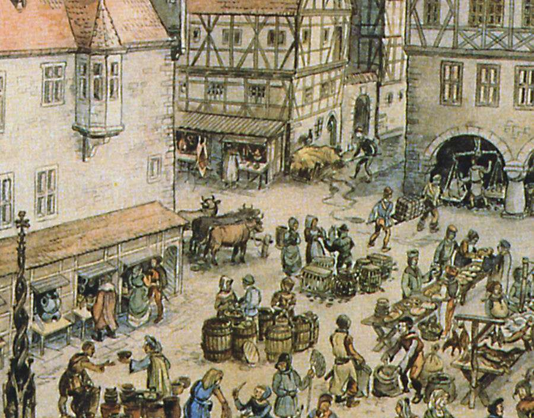
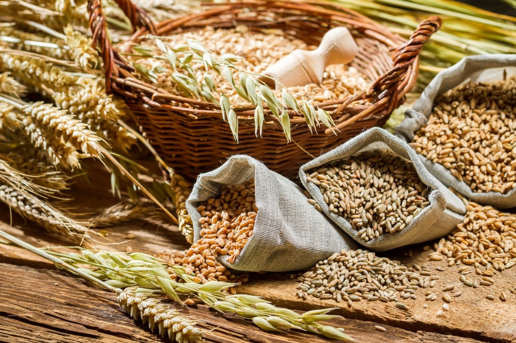
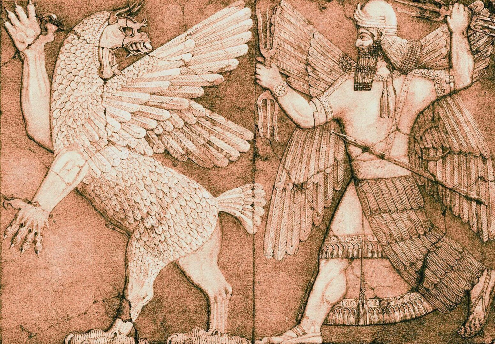

CIVILIZAÇÃO BABILÔNICA
Organização Social
A sociedade da Babilônia parece ter sido constituída por três classes de indivíduos: as pessoas livres da classe alta (awilu), os escravos recrutados entre os prisioneiros de guerra (wardu) e os indivíduos livres de estatuto inferior (mushkenu).
O país era constituído por cerca de doze cidades, rodeadas por vilas.
Um monarca do tipo absolutista governava este Império, apoiando-se num vasto conjunto de colaboradores, governadores, administradores, conselheiros e os anciãos das cidades, encarregados de gerir a administração local.
Economia
Devido ao solo fértil da mesopotâmia a economia era baseada na agricultura, principalmente no cultivo da cevada. A cevada era usada como meio de pagamento de salários e em rações diárias, sendo também utilizada como a base para a manufatura de uma bebida natural: a cerveja. Outros produtos eram o óleo (de linhaça, de gergelim), linho, trigo e hortigranjeiros. Rebanhos de ovelhas e cabras pastavam nos campos fora da estação. O gado pastava quando havia água suficiente. A produção de lã era extensa, e convertida em peças de tecido. Somente o extremo sul da Mesopotâmia tinha economia diferente, baseada em tamareiras e na pesca. Por mais que a economia parecia estável e sustentável, a região carecia de recursos minerais e de madeiras, que são essenciais para a construção de grandes monumentos e prédios mais resistentes. Ao longo do tempo, os mesopotâmicos tiveram mais e mais necessidade destes materiais, que vinham de longe; ou das florestas do Líbano ou das montanhas do Irã moderno. Estas montanhas eram ricas em minerais, pedras e metais. O que um país não tem, deve tentar conseguir por outros meios, e estes são basicamente, tributo, pilhagem e comércio.
Tributo e Pilhagem
Há duas formas básicas para se obter os materiais que países necessitam: pela guerra ou comércio. Tais materiais são em geral exigidos como tributo ou tomados por pilhagem após uma expedição militar. No Épico de Gilgamesh, o lendário rei de Uruk, conta que ele foi até as florestas do monstro Humbaba, e derrotando-o, conseguiu provavelmente a madeira para erguer as famosas muralhas de Uruk. Outro rei famoso, Lugalbanda, exigia por suas vitórias a troca de cereais por pedras preciosas.
Comércio
Expedições militares eram realizadas após a colheita, geralmente em base anual e em especial no Primeiro Milênio, quando os agricultores podiam tornar-se soldados. Minerais (cobre, estanho, prata, uma pedra preta chamada diorita, etc.) estavam disponíveis em áreas distantes, portanto as campanhas tinham de ser consideradas com muito cuidado para não serem dispendiosas ou deixarem as cidades à mercê de outros inimigos. O comércio então começou a ser praticado. Em textos de cerca de 1900 a.C., existem indícios de que o comércio começa a ser executado de forma profissional e capitalista, com negócios sendo realizados por embarcações ao longo do Eufrates e do Golfo Pérsico e caravanas regulares de burros seguindo até a Anatólia (Turquia moderna).
Mercadorias
Além de cereais, os habitantes da Mesopotâmia tinham pouco a oferecer. Cereais eram exportados, mas pesados demais para serem carregados por burros em longas distâncias. Materiais importados de outros locais eram novamente exportados, tal qual o estanho, um importante metal para a manufatura do bronze, que provavelmente vinha naquela época do Afeganistão, e era exportado para Anatólia (Turquia) - um grande centro da indústria de metais, onde as florestas eram abundantes para fazer funcionar fornalhas. Outras mercadorias comuns eram as tâmaras, óleo de gergelim, e artesanato. A Babilônia tinha uma grande indústria lanicultora. Peças de 4 a 4,5 metros eram transportadas às centenas cerca de 1900 anos a.C
Religião
A religião babilônica era politeísta.
Durante os períodos imperiais, os babilônios estabeleceram um culto unificado em todo o império, no qual o deus Marduk (padroeiro da Babilônia) se impunha sobre o resto dos deuses (cujo culto, além disso, se mantinha nas cidades conquistadas). O resto das divindades representavam elementos da natureza: o sol, a lua, a água, a terra, etc. Além disso, existiam espíritos bondosos com rostos humanos e maus com traços monstruosos.
